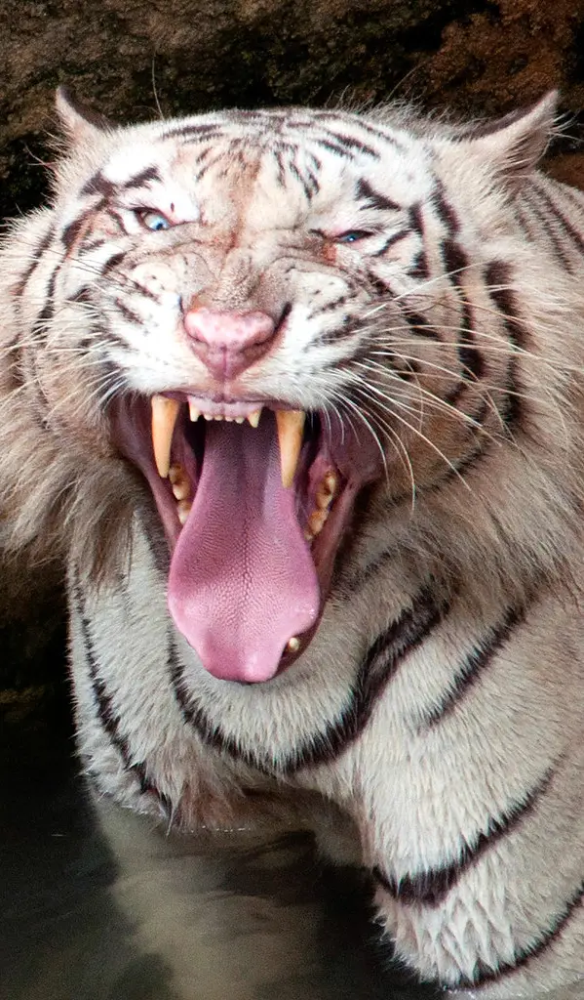
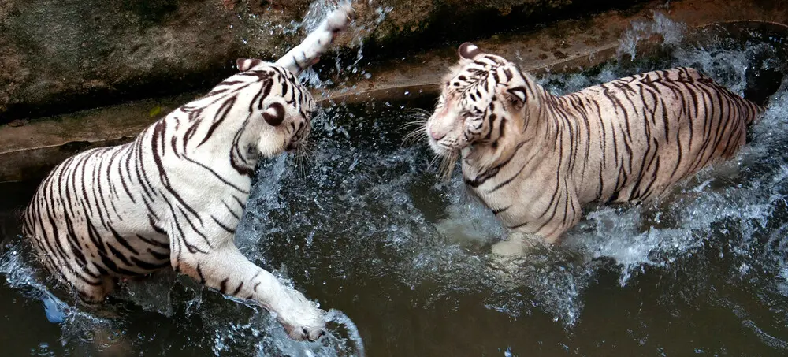

The White Bengal Tiger

Characteristics
- Fully grown at 2-3 years of age
- Males grow up to 230 kg in weight and reach up to 3 m long
- Females weigh around 130-170 kg and measure up to 2.5 m in length
- White or crème colored fur with black, grey, or dark brown stripes that are unique
Behavior and Diet
- Live solitary lives
- Rest during the day and hunt at nightfall
- Diet in the wild includes buffalo, goat, deer, and wild boars
- Diet in captivity includes chicken, beef, pork, rabbit meat, fish, and bones
